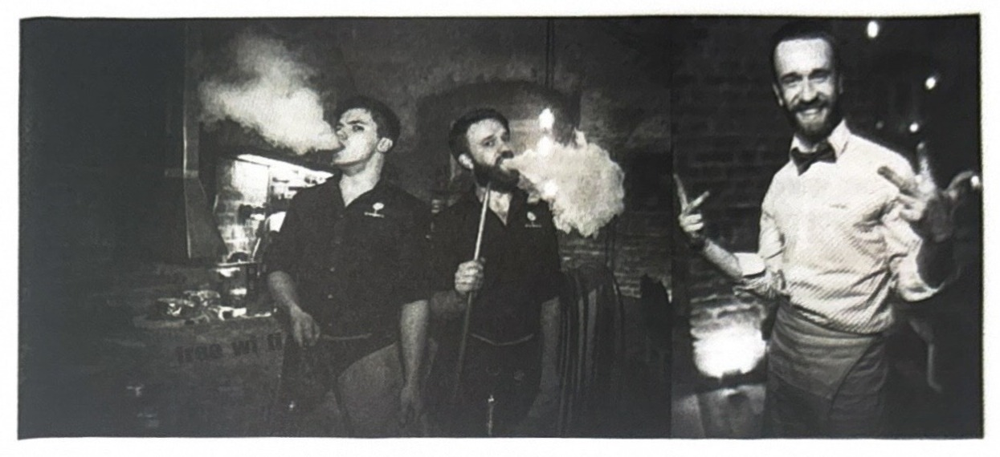
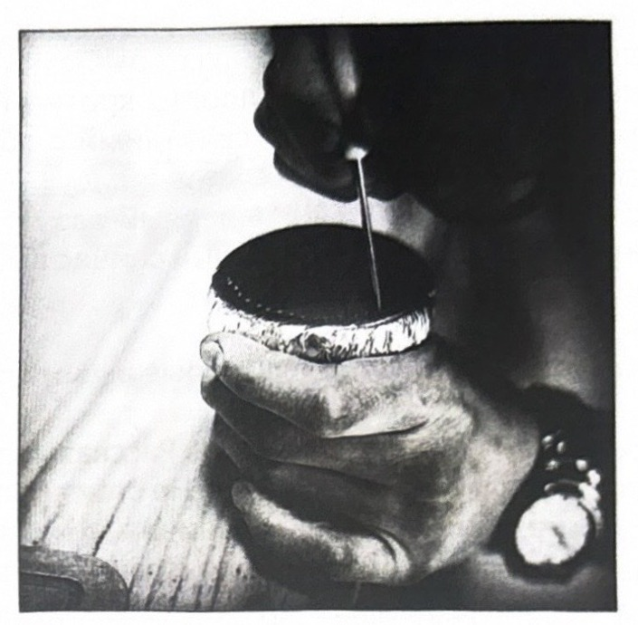
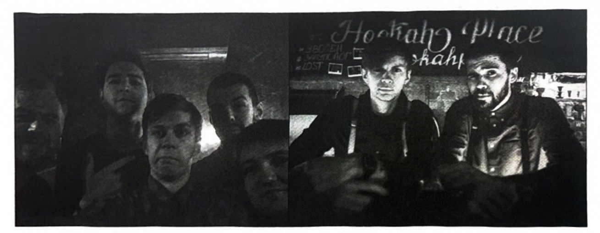
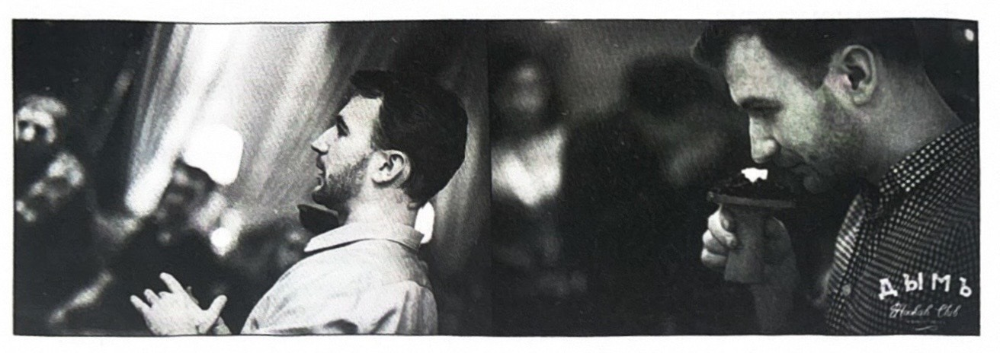
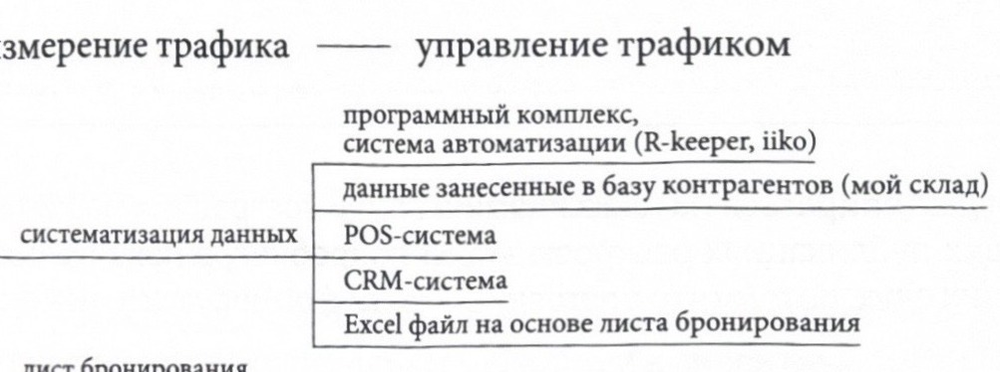
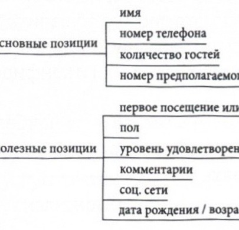
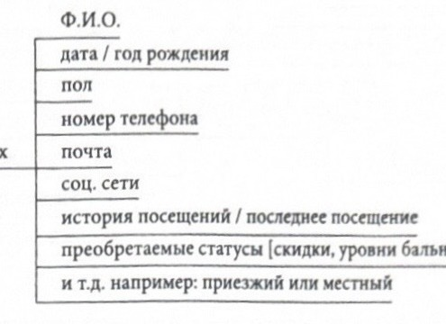
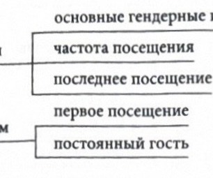
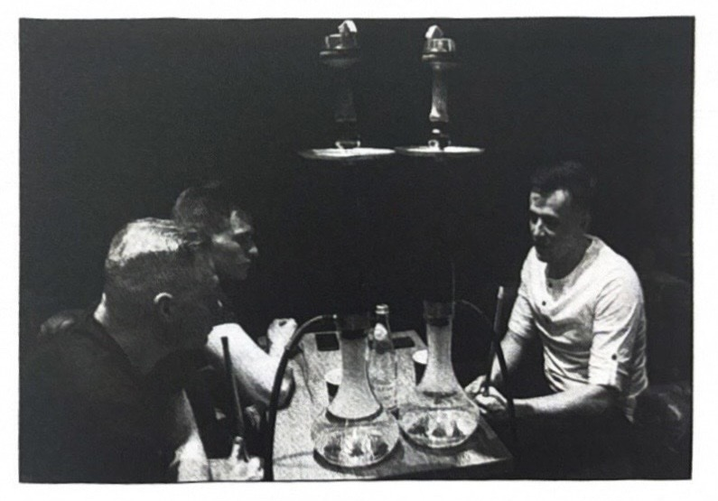

サービス ＞ オーダーテイク ＞ 販売 ＞
この章では、さまざまなシーシャマスターがシーシャ店でのサービスについて語ります。業界の発展とともに、ゲストはより要求が厳しくなっています。そのため、店舗におけるサービスは、競争上の決定的な優位性となっています。
シーシャラウンジにおけるサービス。ゲストとどう接するか。
「ШИШКА LOUNGE」の元シーシャマスター、アレクサンドル・ツヴィルコ｜が、シーシャラウンジにおけるサービスと販売についての見事な記事を書いてくれました。
＞ シーシャラウンジにおけるサービス
サービスとは、英語からの訳で「奉仕、仕事、接客」を意味します。私たちの具体的なケースでは、これは当店へ一服しに来てくださるゲストへの接客を指します。すなわち、ゲストの望みを満たすために私たちが行う一連の行動の総体であり、その結果、ゲストが当店への来訪に満足してくださることを目指すものです。
「サービスはレストランのコンセプトに不可欠な一部です。それは料理をさらに美味しくし、ゲストを何度も何度も足を運ばせるのです」――ジム・サリヴァン、アメリカのマーケター、レストランビジネス分野のコンサルタント。当店の厨房で作られる「料理」とは、言うまでもなくシーシャです。
実際のところ、近年では我々の市場における激しい競争を背景に、レストラン業に携わる人々は、まさにこのサービスとその質に、ますます多くの注意を払い始めています。
おそらく私たちは皆、さまざまな店のゲストとして、スタッフの接客がその店への来訪の印象にどう影響するかを、身をもって感じ取ったことがあるでしょう。たとえば、どこか辺鄙な田舎を通りがかり、昼食をとろうと地元の小さなカフェに入ったとき、私はその心からの笑顔、注文の正確さとスピードに感銘を受けたことがあります。しかしそれと同時に、モスクワの中心部のどこかの店を訪れてスタッフとやりとりした際に、無礼さ、いいかげんさ、無愛想さ、そして自分の仕事への完全な無関心といったものに出くわすこともあるのです。
私にとって、店のサービスの質はビジネスの成功を左右する最も重要な要因の一つであることは明白です。ことわざにもあるように、「ゲストが満足すれば、主人も喜ぶ」のです。主人が喜べば、すなわち皆にとって良いことなのです。
また、質の高いサービスをきちんと整えることによってのみ、ロイヤルなゲストや安定した収益という競争上の優位性を得ることができます。私たちのサービスの利用者としてのゲストのロイヤルティとは、まさにあなたのブランドのサービスを利用するという習慣に基づき、他の選択肢を除外した、ゲストの好意的な態度と感情的な結びつきのことです。つまり、大雑把に言えば、ロイヤルなゲストとは私たちの常連であり、一服するなら私たちの店にしか来ず、いつも何もかもに満足していて、自分の知人皆に、あなたの店がどれほど素晴らしいかを語ってくれる人のことなのです。
しかし、ゲストのロイヤルティを獲得することは、継続的で、しばしば長期にわたるプロセスです。継続的であるということは、それが一瞬たりとも途切れないということであり、私たちは常に常連のゲストに対して責任を負っているのです！
私の見解では、店内に「フレンドリーな雰囲気」を作り出すことは非常に重要です。近年これは、シーシャラウンジに限らず、非常に人気のあるテーマとなっています。一人ひとりのゲストを覚えるように努め、会ったときには名前で呼びかけましょう。これはどんなゲストにも、自分が大切にされているという感覚を与えます。ただしその際には、友好的なコミュニケーションと馴れ馴れしすぎる関係との間にある微妙な境界線を感じ取り、それを越えないようにしなければなりません。
さらに、店全体の雰囲気にはスタッフの気分が非常に強く影響すると、私は心から思っています！ あなたが自分の仕事を愛し、責任を持って取り組んでいれば、ゲストはそれを見て、感じ取ります。あなたが悪い気分でも良い気分でも、ゲストはそれを感じ取りますし、あなたがゲストに対して悪く、あるいは敬意を欠いた態度をとれば、それは微妙なレベルで感じ取られてしまいます。ですから、仕事中は常に良い気分でいて、すべてのゲストを心から愛し、敬いましょう。そうすればゲストも、あなたに同じように接してくれるのです。
加えて、覚えておくべきは、あるゲストはコミュニケーションを好み、まさにスタッフと日常的・専門的な話題で会話するためにシーシャラウンジに来るのに対し、別のゲストはシーシャを吸って読書に没頭したり、ノートパソコンで仕事に没入したりするために来る、ということです。
後者は概して、あまりおしゃべりをせず、ただ自分のお金と引き換えに質の高い製品を受け取ることを期待し、質問や会話であまり煩わされたくないと思っています。こうしたゲストはいつも非常に集中していて、しばしばシーシャの状態についての問いかけにすら反応しないこともあります。そのような場合は、炭を交換して、そっと退散するのが最善です。
一方、コミュニケーションを好む第一のタイプのゲストには、もちろんそれを拒むべきではありませんが、肝心なのは、業務に支障をきたさない範囲で行うことです。単純に言えば、会話をする時間があるなら、それを割いてあげればよいのですが、繁忙時にどなたかのゲストがあなたと関係のない話題で会話を始めようとした場合は、会話の時間がないというごく当たり前の理由を説明して、柔らかな形でお断りしなければなりません。
さて、ここからは、私がシーシャマスターやシーシャラウンジのスタッフの仕事をどのように段階的に捉えているかについて、もう少し詳しく話すことができます。ルーシでこう言われていたように――「ゲストを歓迎するなら、門の外で出迎えよ」。
たとえば、どこかの小さなカフェやレストランに入ったとき、とりわけ初めての場合、たとえばクロークがどこにあるかも分からず、ましてやどのテーブルに座ってよいのか、そもそも空席があるのかも分からず、入口では誰も出迎えてくれない、ということがあります。そして戸惑いながら立ち尽くし、どうすればよいか分からない……。あまり気持ちのいいものではないですよね？

だからこそ、ゲストは常に敷居のところから出迎えなければなりません。これはあなたのもてなしの心を物語ります。とりわけ、魅力的な笑顔の美しい女性が出迎えてくれるなら、なおさらです。
ゲストがテーブルに着き、（もしあれば）開いた状態のメニューが手渡された後、ゲストのもとへ赴き、注文の準備ができたかどうかを確認する必要があります。私が思うに、ゲストが上着を脱いでテーブルに着く前にオーダーテイクのために近づくのは、少し不適切です。なぜなら、まずはゲストが快適に落ち着くべきだからです（例外は、ゲスト自身が注文するためにあなたを呼ぶ場合です）！
オーダーテイクの際には、次の点を確認する必要があります。
強さ（マイルド、やや強め）
-
味の特徴（酸っぱい、甘い、爽やか、甘酸っぱい、スパイシー、フローラルなど）
-
好きな味、嫌いな味（何を基準にできるか、そしてボウルに絶対入れるべきでないものは何か）
-
どの吸い心地（ドロー）を好むかを基準にして、ゲストが吸いたいと思う器材を確認し、ドローに合ったシーシャあるいは詰め方を選んであげること
-
ゲストによるボウル選びについては、答えが一筋縄ではいきません。なぜなら、ゲストには自分が吸いたいと思うボウルを選ぶ権利がある一方で、私たちプロとしては、特定のタバコや特定の喫煙者にどのボウルを合わせるべきかをより熟知しているべきだからです
-
常に注意深くある必要があります。なぜなら、もしゲストに何かを確認し忘れた場合――たとえば、ゲストがフレッシュ（みずみずしいもの）を頼んだからといって、パンラース入りの何かを詰めようとしたものの、ゲストはそれを吸わず、その人にとってフレッシュとは要するにオレンジのことだった、というような場合――それがあなたのボウルへの不満の原因となり、結果として詰め直しにつながりかねないからです。つまり私たちの課題は、ゲストが何を吸いたくて、何を吸いたくないのかをできる限り正確に理解し、それをできる限り正確に実行することです。当店での実践が示すように、詰め直しが起こるとすれば、それはひとえに、注文が正確に受けられていなかったからにほかなりません（ボウルに嫌いな味が入っていた、強さが合っていなかった、など）。万一ゲストがボウルの詰め直しを断固として要求する場合は、それを最優先で、できる限り迅速に行わなければなりません！
たとえば、あなたがカウンターの後ろで詰め作業に追われているときに、新しいゲストが着席し、今すぐには物理的にオーダーテイクのために近づけない、という場合、その際にはゲストに、あなたが彼らの来店に気づいていることを示す義務があります（目で彼とコンタクトを取り、うなずき、挨拶をして、手が空き次第すぐに注文を取りに伺うと伝えるのです）。
私が働いている店では、シーシャのオーダーテイクの最大所要時間は5分です！ しかし繰り返しますが、たとえすぐに近づけなくても、あなたがゲストの来店に気づいていることを知らせることが非常に重要です！ シーシャの提供にかかる最大時間については、その時間枠は15分に制限されています。15分というのは、ホールが満席の状態での最大の提供時間です。つまり、満席でなければ、シーシャはもっと早く提供されるべきなのです！ 同意していただけると思いますが、ゲストの顔に「おお、なんて速いんだ！」という言葉を伴う喜びの驚きが浮かぶのを見るのは、嬉しいものです。ですから、常にできる限り速くシーシャを準備して提供するよう努めるべきです。ゲストはあなたの仕事ぶりを評価してくれるでしょう。
シーシャを提供する前に、皿（ソーサー）とホースが清潔で乾いていることを確認してください。そうでなければ、それらを拭く必要があります。提供中に偶発的に落下するのを防ぐため、ボウルがシャフトにしっかりと固定されているかを確認してください！
シーシャを提供する際は、可能な限りオープンな仕草で渡しましょう。つまり、ゲストに近づいたときに、彼があなたの左側にいる場合はシーシャを右手で渡し、ゲストがあなたの右側にいる場合は左手で渡します。ただし、これが他のゲストにとっても、そしてあなた自身にとっても快適であることが前提です。
また、シーシャ職人はゲストに、使い捨てマウスピースを装着した状態でホースを渡す義務があると私は考えています。ただし、マウスピースをホースに装着する際は、指で触れないようにするため、マウスピースの包装を最後まで剥がさずに行うべきです。これはあまり衛生的ではないからです。そしてもちろん、これは繁忙時に少し時間を節約してくれます。あなたの熟練した手なら、たとえば長い爪に塗りたてのマニキュアをした女性などよりも、ずっと速くこれを行えるからです。
また、当店ではシーシャの喫煙時間を調整するために、時間制料金の方針を採用しています。これは混雑度が高いことに起因しています。
私の見解では、1時間にわたって安定した喫煙を実現するための主要な条件の一つは、正しく設定された温度管理です。つまり、シーシャを提供する際に、あなたは喫煙開始から5分後、10分後、15分後にそれがどのように振る舞うかを理解していなければなりません。そして、まさに喫煙開始の最初の5分間にゲストのもとへ赴き、シーシャの吸い具合を尋ねることが非常に重要だと思います。なぜなら、まさにこの最初の5～10分間に、ボウルが過熱したり加熱不足になったりする可能性が高いからです。加えて、ゲストはそれぞれ吸い方が異なる（男性、女性など）ため、温度は喫煙者一人ひとりに合わせて個別に調整する必要があります。
さらに、具体的に当店では、内部基準によって炭の交換は15分ごとに行われるべきとされています。これは、ロボットのように近づいて、どのボウルの炭も機械的に交換しなければならない、という意味ではありません！ 15分ごとにシーシャ職人はテーブルに赴き、シーシャの状態を尋ね、必ずホースを借りて、シーシャが本当によく吸えるかを自分で確かめ、必要に応じて炭を交換しなければなりません。
また、シフトに入っている間、シーシャ職人は常にゲストを、彼らがどう吸っているか、吹き戻し（プロドゥフカ）後の煙の量を注意深く観察しなければなりません。なぜなら、吹き戻し後にボウルから煙が立ち上るように噴き出すのであれば、それはおそらく過熱だからです。また、フラスコが透明であれば、その中の煙の濃さを観察できます（煙が濃くなければ、温度を上げる必要がある可能性が高い）。そしてゲストの反応――その顔には、シーシャを気に入っているのか、それとも何か問題があるのかが、すべて書いてあります。
もしゲストの誰かが正しく吸えていない（吹き戻しをしない、吸わない、深く吸い込まない、など）のを見かけたら、近づいて話しかけることは、私の神聖な義務だと考えています。シーシャの吹き戻しバルブが何のためにあるのか、なぜタバコのようにではなく深く吸い込まなければならないのか、吸い終わったらホースを自分のところに留めずに次の人に渡さなければならないことを説明するのです。こうして、あなたはゲストにシーシャ喫煙の文化を植え付けるのです。
おそらく誰しも、ある種の「体内タイマー」が作動する、面白い状況を経験したことがあるでしょう。たとえば、5番テーブルはもうかなり時間が経ったから炭を交換しなければ、とふと思い当たります。そのテーブルに近づくと、ゲストからこう言われるのです。「おお、ちょうどいいタイミングだ、ちょうど炭を交換しなきゃと思っていたら、もう来てくれた」。これは、ゲストの望みを予測する、あるいは先取りする、と呼ばれるものです。
信じてください、ゲストはこれに大いに喜びます。なぜなら、あなたが常にゲストの望みを予測するなら、それはあなたの高いプロ意識と仕事への真剣な姿勢を、そしてゲストへの気配りと配慮の表れを示すものだからです！
たとえば、女性が縮こまって座っていて、おそらく寒いのだろうとあなたが気づいたとします。その場合、あなたは待つことなく彼女に近づき、ブランケットをお持ちしましょうと提案すべきです。これによってもあなたは、彼女の望みを言い当て、その期待を先取りしているのです。
各時間の終わりに、私たちはゲストのもとへ赴き、十分に吸えたかどうかを尋ねます。十分でなければ、もう一台シーシャを注文するよう勧めます。十分であれば、お会計をお持ちしましょうかと提案します。ただしこれは、ゲストがちょうど1時間、1分たりとも長くなく吸う、という意味ではありません。もし1日の始まりであったり、あるいは閉店が近づいていて店の混雑度が低く、すでにゲストが座っているテーブルに予約も入っていなかったりする場合、私たちはロイヤルティ（柔軟な姿勢）を示し、ゲストが新しいシーシャを注文すること、あるいは1時間の喫煙の後すぐに会計を済ませて店を出ることを、強要はしません。
つまり、結局のところ、1時間の喫煙の間にマスターは、シーシャの状態を尋ね、必要に応じて炭を交換するために、最低でも4回はテーブルに赴くべきだということになります。1時間にわたる安定した喫煙のためには、これで十分です！
喫煙の終わりに、ゲストにどのように時間を過ごしたか、どう吸えたか、何が気に入って何が気に入らなかったかを尋ねることは、重要なことだと考えています。「良かった」「素晴らしかった」「最高だった」「すてきだった」と答えるなら、おそらく実際にその通りなのでしょう……。しかし、もし返事として「うーん、まあ」とか「普通」と聞こえたなら、おそらく何かが気に入らなかったのです。この瞬間には、少し粘り強くなって、なぜ「良かった」ではなく「普通」なのか、ゲストが具体的に何を気に入らなかったのかを確認するのが良いでしょう。次回はそうした間違いを繰り返さないためにです！
そして当然のことながら、ゲストが店を出るときには、お見送りの挨拶をしなければなりません……。たとえそれが、つんと鼻を高く上げ、あなたに何の反応も示さないご婦人方であっても、あなたは完璧であってください。
シーシャの提供。ミハイル・プロホロフ
これは、もう「使い古された」テーマに思えるかもしれません。しかし、かなり長い間、私はこんな光景を目にしてきました――ほとんどすべてのシーシャマスターがこのことを知っているように見えるのに、実際には何も知らないことが分かるのです。あるいは、もっとひどいことに――知ってはいるのに、ただそれをやらないのです。以下に書かれていることはすべて、私自身の実践からのエッセンスであり、絶対的な真理を主張するものではありません。また、これをどう行えばよいか、そして私のもとではどう機能しているかという、具体的な手法やコツも共有します。
ちょっとした注意点です。以下に挙げる行動はすべて、すべてのゲストに対して行う必要はありません。一貫性（コングルエンス）を保ってください。すべては場にふさわしく、状況に合っていなければなりません。
まず始めに言うと、私が訪れたことのあるほとんどすべてのシーシャラウンジでは、シーシャの提供はせいぜい、マスターがボウルに詰めたさまざまなタバコの味を私に列挙するだけ、というものにとどまっていました。時には、シーシャを持ってきて黙って去っていく、ということすらありました。最も残念だったのは、シーシャ自体は素晴らしいものだったこともあるのに、私の感情は、最高の場合でも、まあまあの店に行ってまあまあのシーシャを吸ったな、というところで終わってしまった、ということです。しかもそれは、自分自身がこの業界で働いている私の場合の話です。では、シーシャを扱っていないゲストについては、何をか言わんやでしょう？ こうした考えが、私を、ゲストへの自分自身のシーシャの提供に取り組み始めるよう駆り立てたのです。
第一に理解すべき重要なことは、人々は感情を求めて店に来る、ということです！ これは、まさにあのマズローのピラミッドにもあるとおり、ごく普通の社会的な人間の欲求です。店で提供される多くのサービスを、人々は自宅で、自分の力でも得ることができます。美味しい食事や飲み物を作る、シーシャを詰める、などです。
しかし彼らは、私たちのところへ来てくれるのです。もちろん、ただ単に、誰にも余計に邪魔されたり構われたりしないように、ノートパソコンを持って仕事をしにシーシャラウンジに来るゲストもいます。彼らはただ質の高い製品を受け取りたいだけで、それだけなのです。
第二に理解すべきことは、男性と女性とでは感情的な受け取り方が異なる、ということです。そして、男性のグループにシーシャを提供する場合と、女性のグループに提供する場合とでは、それを少し違ったやり方で行うべきです。
一つのシンプルなテクニックを共有しましょう。仮に「ストーリーズ（物語）」と呼ぶことにします。
メリット:
- ゲストは、シーシャがいい加減に作られたのではなく、それに魂が込められていることを目にします。
-
自分をプロとして位置づけられること。
-
それを自分の「名刺代わり」にできること。
-
たとえ、うっかり「でたらめ」を言ってしまったと気づいたとしても、あなたはそこにあえて焦点を当て、ゲストと一緒にそれを笑い飛ばすことが非常に簡単にでき、それによって皆の気分を盛り上げられること（これは特に、このコツを習得する段階でうまく機能します）。
-
ゲストのロイヤルティの強化と、新規ゲストの流入の増加。
-
その結果としての、追加シーシャの販売増。
-
そしてその結果としての（給料が歩合制で構成されている人にとっての）給与の増加。
デメリット: すべてを正しく行えば、それはありません。
これはどう機能するのでしょうか？ とても簡単です。たとえば、あなたのもとに男性のグループのゲストが来て、繁忙ではなく、あなたが多かれ少なかれ手が空いているとしましょう。彼らから注文を受けます――やや強めの方向の中程度のもので、酸味のある爽やかなもの、と。
あなたはレイヤード（層状）の柑橘系の詰め方をしました（下層は、たとえばTangiersのPlum、中層はNakhla MixのIce Lemon Mint、そして上層はNakhla MizoのLemon、というように）。
続いて、あなたはシーシャを運び、こう言います。「ご存じですか、あなた方のボウルを詰めている間に、ある場所を思い出して、それを描いてみることにしたんです。さあ、ごく普通の、日が照り、風の吹く、緑の草が生い茂る野原を思い浮かべてみてください。
あなたのボウルの中の太陽――それは、最初に感じるレモンです。なぜなら、レモンは太陽と同じように丸くて黄色いですから。太陽はそこに生えている草を照らします。草というのは、ご存じのとおり緑色です。あなたが次に感じるライムと同じように緑色なのです。爽やかさ――それは風です。では、草はどこから生えているのでしょう？ 大地からです。大地は黒く、Tangiers（タンジェ）もまた黒い、しかもそこには黒スモモの味があるのです」。
同じこのボウルを、もし女性たちが注文したのであれば、どう提示できるでしょうか。「ご存じですか、あなた方のボウルを作っている間に、とても美しいある場所についての、あまりにも鮮やかな記憶が私に押し寄せてきたので、ほんの一瞬でもあなた方をそこへお連れすることにしたのです。広々と広がるロシアの野原を思い浮かべてみてください。涼しい風がそこを吹き渡り、四方からあなたを撫で、鮮やかな緑の草が茂り、夏の灼けつくような太陽が照りつけ、その光線の触れる感触をあなたは肌に感じています。まさにこの太陽が、あなたのボウルの中では、最初に感じる酸っぱいレモンのノートとして表現されています。なぜなら、レモンのひと切れは、あの野原の上の太陽と同じように丸く、黄金色だからです。太陽の光線は、柔らかく鮮やかな緑の草を照らします。あなたが少し後に感じるライムと同じように緑色の草を。酸っぱく、深みのある味わいです。そして、そこには心地よい涼しい風が吹いていて、灼けつく太陽の光線からあなたの肌を冷ましてくれるので、あなたはさらに軽い冷たさも感じることでしょう。では、草はどこから生えているのでしょう？ 大地からです。そして大地は黒く、下に敷かれているTangiersのタバコと同じです。それが軽く甘いスモモのトーンを与え、酸味をわずかに和らげてくれるのです」。
違いは、女性にはより多くの感情を与える必要があるのに対し、男性には単にいくつかの論理的な連想の系列を示せば十分だ、という点にあります。男性は、これほど風変わりな形でシーシャを提示されたという事実そのものと、味の構成要素と描写された野原の中の対象とが一致しているということから、肯定的な感情を得ます。
女性はより感情的な存在です。ですから、彼女たちは感情に沿って解きほぐしていき、自分の話の中に質の高い形容詞をより多く盛り込み、すべての細部をより多く、より鮮やかに、より深く描写するのが良いでしょう。状況に直接没入させるような言い回し（「思い浮かべてみてください」「光線が触れていくのをあなたは感じています……」「あなたの肌を撫でる涼しい風」など）を、より多く使うことができます。また、話を現在時制で語ることも、状況への没入を助けます。
さて、この手法の本質が明らかになったところで、ボウルにタバコを投げ入れている、まだその最中にさまざまな物語を素早く作り出せるような、いくつかの「ケース」をご紹介しましょう。
- 自然（上の例のように）。
あるいは、森について何か考え出すこともできます、などなど。
-
旅（「あなたは山々を旅していて、老人があなたに本物のヒマラヤの蜂蜜をふるまってくれました。それはあなたを内側から温め、あなたの受容体を最も鮮やかな甘さで満たしました……」云々）。
-
買い物（「あなたは青いBMW（blue mist）を買って、その買い物を祝いました（Argeliniのシャンパンで）……」）。
-
食べ物と飲み物（「そして、この素晴らしいインドのマサラチャイをひと口飲んだとき、あなたはあまりにも多面的で包み込むような味わいを感じ、それは何物にも比べようがありませんでした。同時に、あなたは胡椒の辛さも、柔らかなミルクの味も、そして……を感じたのです」）。
手始めに、これらのケースを練習し、それらに沿った自分自身のパターンを編み出すことができます。物語のための、いわば柔軟なテンプレートのようなものです。これは将来、それらから離れて、互いに似ていない色彩豊かな描写をその場で考え出すことの助けになります。

また、物語の役割を果たすのは、必ずしも連想の系列でなくてもよい、という点も指摘しておくべきでしょう。それは単なる短い話でもよく、できれば1分を超えない、詰め方の全体的なコンセプトと何らかの形で結びついていて、感情的な要素を持っているものであればよいのです。それは、あなた自身が初めてシーシャラウンジに来てシーシャを吸い、それに感銘を受けた、そして今、ゲストにまさに同じものを作った、というような話ですらかまいません。
以上述べたことを総括して、いくつかの結論を導きます。
-
物語を、誰にでも、いつでも語る必要はありません。語るのは、手の空いている、コミュニケーションに乗り気なゲストに対してだけです。押しつけがましくならないようにしましょう。
-
物語はできる限り簡潔であるべきですが、その際にその感情的な要素が損なわれてはなりません。シーシャのプレゼンテーションが1分を超えないことが極めて望ましいです。
-
男性には論理を、女性には感情を。
-
連想の系列だけにこだわるべきではありません。それは、30秒や1分の短い伝説（レジェンド）でも、自分自身の経験からの話でもかまいません。
最後に指摘しておきますと、シーシャのプレゼンテーションを始めることに対する最もよくある反論は、こういう言い分です。「いやいや、私がこういう物語を語り始めたら、周りの皆も語り始める。そうしたら、それはもう私だけのコツではなくなる」。実のところ、それはそういうふうには機能しません。「伝説」を使ってシーシャを提供するシーシャマスターが3人いるかもしれません。そして、その3人のマスターのそれぞれで、これらの「伝説」は異なるものになるでしょう。
ある人はより簡潔で引き締まった表現を、別の人はユーモアを交えて、また別の人は文学的な語彙を使った美しい一分間の描写を行います。
これらはすべて、あなた自身の気質と、あなたが体現している全体的なイメージによって決まります。ですから、誰かのシーシャのプレゼンテーションの仕方をコピーしようとしないでください。あなた自身のスタイルを、あなた個人に合うように築き上げてください。あなたが「何を」語り、「どのように」語るかが、あなたの全体的なイメージと矛盾しないように。そうすれば、シーシャを提供する際のどんなストーリーも、しっくりと響くようになります。
オーダーテイク。デニス・シヴァチェンコ
デニス・シヴァチェンコ、地域マネージャーХП、モスクワ
レストランには一般に広く受け入れられている販売の技術が存在します。それはすでに何十年も機能してきました。当然ながら、レストランとシーシャクラブを比べる必要はありませんが、シーシャクラブも新たなレベルへと進む時が来ています! 質の高いオーダーテイクと、質の高いサービスのレベルへと! そして当然ながら、私たちは皆お金が好きです。つまり、私たち全員が販売を伸ばし、自分の仕事に(部分的に)標準化を取り入れ始める時なのです。
販売の技術
第1段階。ゲストとの接触の開始。
この段階では、いくつかの項目を行う必要があります。挨拶をすること。名前を名乗ること。ゲストがどのくらいの頻度で吸うのかを把握すること。ゲストのもとへ向かいながら最初の項目を実行している間に、ゲストの気分や、接触に応じる準備ができているかどうかを理解する必要があります。
第2段階。ゲストの希望とニーズの把握。ゲストが使える時間を確認すること。シーシャの強さを確認すること。希望するシーシャの味と、好まない味を確認すること。
追加で:
(会話の流れの中で)テーブルの上の飲み物に注目すること。選ばれた味に対して、追加の味のアクセントを提案すること(あなたはおそらく、ゲストよりもミックスに詳しいはずです)。
第3段階。把握したニーズに基づく提案。必要なことをすべて把握したら、いよいよ販売そのものを行う必要があります。ここからゲストとのゲームが始まります。ここで私たちは客単価を上げようと努めます!
選ばれた味と強さに合わせて、適したフルーツやオリジナルメニューの品を提案します。しかしこれも正しく行う必要があります。フルーツやカクテルの提案は、笑みやにやけを浮かべず、自信に満ちた話し方で行います。次に、少しイントネーションを落とし、信頼を抱かせるような話し方で価格を伝えます。そのシーシャの利点について、もちろん自信に満ちた話し方で語ります。
第4段階。ゲストの質問に対応する。
一部のゲストは、どんな状況であろうと価格を聞くと身構えます。なぜなら彼らは月給が2万ルーブルだったり、オリョール郡から来た学生だったりするからです。一方、別の一部のゲストは価格を聞いても支払うことができますが、彼らは自分が何に対してお金を払うのかを理解する必要があります。もちろん、他の段階と同様に、ここでも各自が自分なりに対応します。そして、してはいけないこと(ゲストと議論する、話を遮る、など)や、すべきこと(誘導的な質問をする、好意的であること……)を述べることは、不要だと私は考えます。ここは各自が自分で書き出せばよいでしょう。
第5段階。提供の順序。
私たちのシーシャラウンジの大半はキッチンに問題を抱えていますが、中にはキッチンがある店もあり、あるいはゲストが自分の食べ物を持ち込んでくることもあります。いつシーシャを出せばよいか確認してください。準備ができ次第か、食事を終えたタイミングか。
第6段階。注文を実行し、フォローする。
- 注文を実行するうえで、奇妙に聞こえるかもしれませんが、まず始めるべきことは、注文を時間通りに出すことです。シーシャについてゲストからフィードバックを得ること。ただし、これはゲストがシーシャの味をしっかり味わえるよう、数分経ってから行ってください。
そして15〜20分ごとに炭を交換すること。シーシャを(可能な限り)安定した温度に保つことで、私たちは最大限に安定した喫煙を提供し、過熱や加熱不足を避けるためにシーシャの管理を行います。そして、これほど頻繁に立ち寄ることで、私たちはゲストのことを気にかけていると示すのです。
第7段階。新しいシーシャの提案。
私たちはレジ売上と自分の給料を上げる必要があります。一定の時間が経過したら、新しい商品を提案します。ただし、もしチェックの際にシーシャが申し分なく振る舞っていると分かるなら、新しいシーシャを無理に押し売りする必要はありません。私たちはゲストにまた戻ってきてほしいのですから!
第8段階。お別れ。
彼に「バイバイ」と言います。そして、彼がもう一度来店したいと思うよう、私たちの近々のイベントを伝えます。これは純粋に私個人の見解として書いたものです。それは他の見解と同様に、主観的なものです。
アンドレイ・レーシ
(インタビュー抜粋)
シーシャの仕事をどこで始めた? そもそもХПの前はどんな店で働いていた?
УКのチェーンで下積みを始めました。「ミスト」「シン」「シュタブ・П」「К8」といった店や、エディク・イスマギロフがいた頃の「イッリ」というバーで。これに加えて、仲間の応援でペテルブルクの他の店にも出向いていました。残念ながら、これらの場所の多くはもう存在しません。
学歴は?
人生という学歴ですね。私たちの体系には「高等教育中退」という表現はないようなので、中等教育ということになります。実際のところ、組織マネジメント学科の5年生のときに大学と別れました。一部は大学の統合のせい、一部は怠けのせいです。永遠の学生ですね。大学で大事なのは卒業証書ではなく、人生の様々な状況と、そこから何を学び取ったかだと、私は思います。
シーシャ以外には何に夢中になっている?
- 音楽です。聴くことも、演奏することも。一時期は仲間と演奏して、ライブをやったり、レコーディングをしたりしていましたが、今は各地に散らばってしまいました。かなり最高の息抜きであり、疲れやネガティブな感情のはけ口です。
スケートボードで滑るのも楽しいですし、街を散歩するのも好きです。主に夜、人がいない時間帯に。大きな人混みは好きではありません。私たちの業界の仕事とは噛み合わないことですが。そしてもちろん、バー巡りも欠かせません。なおさら、すでにペテルブルクの飲んだくれというイメージが出来上がっているので。
好きなアルコール飲料を3つ挙げると?
トリ・トポラ、ヴィノグラードヌイ・ジェニ、それにブレイザー。まあ、基本的に私はお酒が好きで、あえて挙げるなら、たぶんジン、カンパリ、ラムですね。バーボンとウォッカはあまり好きではありません。
あなたにとって「シーシャ文化」という概念はある? あるなら、あなたにとって文化とは何か教えて?
私としては、こう分けられると思います。アラブの、正統的な喫煙文化。モノフレーバーや、どちらかと言えばブラック・タバコ、外見やその他の付属物。そしてもう一方は、現代的な、私たちのスタイル。ただこれは、シーシャ業界の存在の全体的な、外面的な側面で言えば、ということです。そう表現できるならば。
私にとってそれはむしろ、あのコミュニケーションです。従業員とゲストの間だけでなく、この業界全体における交流。なにしろ、そもそも今ではシーシャはコミュニケーションの手段として推し進められています。しかし、それはまだまだ築き上げていかなければなりません。なぜなら今はかなり曖昧な概念であり、まとまりや、いわば結束のようなものがないからです。
皆お互いのことを知ってはいるようですが、共同体意識はまだ希薄です。ロシアで人々が東洋風やトルコ風に装飾されたラウンジから離れ、何か一体的なものを作り出そうとしていた頃は、もっと簡単でした。なぜなら、単純にすべてが少なくて、皆が互いに支え合っていたからです。要するに、議論の余地がある点ですね。
なぜシーシャを仕事にしようと決めた?
- ここはありきたりです。最初は、今のほとんどのマスターと同じく、ただ仲間を手伝っていただけです。それが、気づけばもうシフトに入っていました。面白かったですし、創作の余地があり、せいぜいタバコ会社が全部で5社くらいしかなく、業界全体の動きがオフィスワークよりずっとダイナミックでした。
それに当時は、ミルクや焼き菓子の既製フレーバーなどなく、すべて自分たちで作っていました。業界に深く入り込むにつれて、態度も変わりました。より真剣に、とでも言いますか。業界そのものも成熟していきました。
- 要するに、いろいろな分野で働く機会があり、そのほうが性に合っていました。ちなみに、面白い事実があります。私たちの仲間がペテルブルクでフーカ(Hookah)を開こうと思いついた頃、私はシーシャから足を洗って、専門を活かした仕事を探そうとしていたところでした。でも誘いが来て、どうなるか見てみようと決めたのです。そして気づけば、もうポルチカ(「ポルタフスカヤ」)で3度目の新年を迎えています。たぶん、この瞬間から、これは真剣な仕事になったのでしょう。それに、ある意味では専門を活かした仕事でもあります(ちなみにこれは、多くの同級生について言えることではありません)。
どう考えても、この業界では人がつなぎ止めてくれます。ゲストもそうですし、もうずっと前から第二の家族のようになっているチームも。だって、私たちはほとんど毎日のように顔を合わせているのですから。

「ХПポルタフスカヤ」は最も雰囲気のあるシーシャラウンジの一つだ。何のおかげでそれを実現できたと思う?
これはチーム全員の功績です。私たちはその時点ですでにお互いを知っていて、一緒に働いていました。つまり同じ波長だったのです。そして大きなプラスだったのは、店の内部の仕事のすべてを、自分たちが必要だと思うように、自分たち自身で築き上げる機会を与えられたという事実です。
そして私たちのアプローチはシンプルで、全員に同じように接します。それがシーシャ界隈の人であれ、普通のゲストであれ関係ありません。もちろん、コミュニケーションの仕方は変わってきます。学生たちと笑い合うこともあれば、ビジネスマンのおじさんたちと最新ニュースを語り合うこともあります。
私たちのところは、実質3年間で人材の入れ替わりがまったくなく、あるのは他のプロジェクトへの昇進だけです。たぶん、これがすべての本質です。マジックは、かなり多才で、一つの仕事に身を捧げた人々が集まり、誰も自分のほうへ毛布を引っ張らない(独り占めしない)ところにあります。そしてもちろん、誤りに対する改善作業も。誰も完璧ではありません。偶然、場所と時間と人が一致した。そして走り出したのです。
ああ、それと、私たちのところは音楽が最高です。
すべての美しさは常に物事のシンプルさの中にあり、そしてこれを実現するのが、いつも難しいのです。
オーダーテイク。アンドレイ・カレリスキー
シェフ TANGIERS LOUNGE、サンクトペテルブルク
- 私にとってオーダーテイクとは、何よりもまず、ゲストとの対話です。私は外食店でスクリプト通りに働くことの支持者だったことは一度もありません。私の主観的な見解では、このアプローチはむしろ販売の領域のものであり、私たちはどんなに懸命に稼ごうとしても、結局のところ接客サービスの領域、好意とおもてなしの領域で働いているのです。私と同僚たちがフロアでどのように働いているか、手短に説明しようと思います。
現在、私たちの素晴らしい業界はかつてない速度で発展しています。新しい店の数は年々、幾何級数的に増加しています。そしてもちろん、これは喜ばしいことではありますが、質の高い接客サービスを提供できるシーシャラウンジはほんの一握りです。私たちは皆、外食業における年長の兄であるレストラン業界を手本にしています。しかしそのサービスは、ロシアのレベルにおいては、ヨーロッパやアメリカの店と比べて極めて低いのです。
シーシャ業界はより良く、よりプロフェッショナルになろうと努めていますが、残念ながら、世界で最高のところから学ぶのではなく、ただ自国にあるものを見ているだけです。では、レストラン、この国のトップレストランで私たちは何を目にするでしょうか? 同じような若者たちです。調教された振る舞い、まっすぐな姿勢、堅苦しい歩き方、暗記したセリフ、そして最も腹立たしいことに、頭のてっぺんからつま先まで品定めするような視線で、あなたがどれだけのチップを残すかを計算しようとし、不誠実で、取り繕った、偽善的な笑顔と、より高い品をあなたに売りつけるために計算されたスクリプト(なにしろ全員が販売の歩合で動機づけられているのですから)、そしてシェフに叱られないよう、キッチンで傷み始めた食材から作られた料理。どこもかしこもこうなのです!
そして、私たちの小さく、まだ若い業界は、これらすべてを見て吸収し、吸収し、このアプローチを唯一正しいものとして受け入れているのです。
ではゲストはどうでしょう? 彼の目の前には千もの様々な店があり、そのどれもが、結局のところ彼に提供するのはシーシャと紅茶です。どこでも同じ商品です。確かに、マスターによって詰め方は違い、味の品揃えは異なり、機材や炭も違いますが、大ざっぱに言えば、商品はまったく同じで、どこでも同じです。ゲストにとって重要な基準として残るのは、その商品の価格だけになります。こうした状況では、ゲストはどこへ行くか選ぶのが難しくなります。どこも同じなのですから。こうした背景の中で、ゲストはもっぱら自分の感情的な感覚に従って判断するようになります。彼はより多くのポジティブな印象を得られた場所を選ぶのです。
- 感情と印象は、全人類がどっぷりとはまっている麻薬です! ですから、私たちの業界で働くうえで、自分の職務の優先順位を、平均客単価やシェフが言うことに基づいてではなく、決めることが極めて重要です。最も大切なのは、その店で得たゲストの印象と感情なのです。
私たちのチームでは、常に根本的な要素となるのは、各マスターの個性です。スタッフは皆とても多様で、それぞれに自分のカリスマと魅力があり、全員がイケてます。各自に独自のアプローチがあり、ただ方向性だけが共通しているのです。
- ゲストとの出会いやコミュニケーションの際にまずすべきことは、最短時間でゲストを読み取ることです。彼が会話をする気でいるのか、それとも連れの女性に完全に夢中なのかを見て取ること。どんな気分でいるのか、もしかすると個人的な悩みや問題を抱えているかもしれません。その場合は、喫煙の化学についての講釈をしに行くべきではありません。落ち着いた、押しつけがましくない接客のための時間があるのか、それともとても急いでいて、さっと一服しに駆け込んできただけなのか。そもそも彼はボウルの中身に興味があるのか、それともただニコチンの飢えを満たしたいだけで、たとえば口の中にぶどうの香りを漂わせたいだけなのか。
これらはすべて、その人の服装、表情、身振り、全体的な振る舞い、視線、話し方、所作、礼儀正しさのレベルから知ることができます。
苛立っている人、ストレスを抱えている人は、常にコミュニケーションにおいてあまり感じが良くありません。その場合は、ニーズ把握のための質問を山ほど投げかけに行くべきではありません。すべてを素早く的確に行い、自分のプロ意識と、彼の感情状態がいかに自分にとって大切かを示してください。そうすることで、あなたは彼を自分のほうへ引き寄せ、彼の気分をよりポジティブなものへと変えることができます。
もしゲストがポジティブな気分で、気軽に、打ち解けて話してくれるなら、ぜひ彼と対話を交わし、もっと近づき、話を聞き、もし適切であれば、自分の人生の面白い話をいくつか語るべきです。決して馴れ馴れしさの一線を越えてはいけません。あなたの対話がどんなに親密で友好的な関係で進もうとも、まず第一に彼はゲストであり、あなたは接客スタッフです。常に気配りと礼儀正しさを保ってください。
もしあなたの目の前にいるのが、最初の誘導的な質問の段階からシーシャに詳しいゲストだという印象を与える人なら、彼が望む商品の細部にまで踏み込む必要があります。どんなボウルで吸うのを好むのか? ホイルか、それともカラウドか? どの機材で? 詰め方に何か特別なこだわりはあるか? ミックスについて何か具体的な希望があるのか、それともシーシャ職人の発想に委ねる用意があるのか? タッチ(接触)か、ノンタッチか? どんな温度のボウルが彼にとって快適か?
ゲストをよりよく知るのに役立つ基本的な質問
- 彼はどのくらいの頻度で吸うのか?(「頻繁」の概念は人それぞれなので、1日1回なのか週1回なのかを確認してください。) どんな店で過ごすのに慣れているのか?(もしあなたがプロなら、競合店が何をどのようにやっているか正確に知っているはずです。)
有名なタバコメーカーの名前をいくつか口にしてみてください。もしその人が何のことか分からなければ、彼がシーシャの分野にあまり深く通じていないことがすぐに分かります。
彼にとって爽やかな味とは何か(ミントか、それとも単なる夏のフルーツか)?
基本的なこと——最初の数分で、その人が詳しいかどうかを把握すること。
もし詳しくなければ、煙たく、美味しく、美しく作ること。もし詳しければ、彼から最大限の情報、あらゆる可能なニーズとニュアンスを引き出すこと:
-
シーシャの強さ(点数システムは主観的で、ある人にとってはフマリ(Fumari)が8点ということもあり得ます。ですから、その人が吸っているメーカーや頻度を聞き出し、強めがいいのかキツめがいいのかを確認します)
-
味(味と組み合わせを非常に注意深く提案し、好まない味を尋ねます)
-
シーシャのドロー(機材の中から特定のものを提案できます)
-
ボウル(ファンネル/直通式/フルーツ、特定のボウルを提案できます。たとえばエイリアン/トルカなど)
-
ホイルか、それともカラウドか
-
タッチか、それとも間隔をあけるか(オツストゥプ)
-
シーシャを提供する際に、温度が快適かどうかを確認します。
-
すべてを軽やかに、気配りをもって、丁寧に行うこと。そして最も重要なのは、誠実に、好意をもって行うことです。あなたのゲストがどんなにクズであろうと、彼を愛してください。プロであってください。
重要な点の一つは、主導権を従業員側に保つことです。ゲストは免罪のために来たのではなく、しばしば彼自身、自分が何を望んでいるのか分かっていません。あなたのほうから自主的に、ゲストにあれこれの組み合わせや、何か新作、シーシャと紅茶という形式での面白いガストロペア(味のペアリング)を試すよう提案する必要があります。相手から出来上がった答えを待ってはいけません。あなたが彼の代わりに、彼が何を望んでいるかを、彼の希望と好みだけに基づいて決めなければなりません。
味や強さを外してしまうこと、ミックスの選択を間違えること、あるいはただ目の前に意地の悪いゲストがいることもあるでしょう。しかし、もしあなたがすべてを誠実な笑顔で行い、最高の印象を贈ろうと正直に努めるなら、あなたは自分のアプローチと態度でゲストの心をつかむことができます。それは良いシーシャや美味しい紅茶よりもずっと重要なことです。そのゲストは必ず、ほかでもないあなたのところへ戻ってきます。
オーダーテイクは、全体としてのサービスと同様に、好意とおもてなしから始まります。これらの言葉の最も深い意味において!
アルチョム・バエフ
この記事は、常連で忠実なゲストを生み出すための、地道で骨の折れる作業に捧げられています。また、シーシャ業界の様々な分野に現代的なマーケティングのアイデアを導入する方法も紹介されています。
第一部
ДЫМЫ
第一部では、不可欠な段階であるデータ収集に焦点を当てます。得られた情報の体系化と分析のためのツールを検討します。なぜそれを行う必要があるのか、その例を解説します。
こんにちは。今回は、あなたのビジネスの重要な構成要素である「常連客」について語りたいと思います。マーケティングの講師という肩書きを名乗るつもりはないので、私たちは真剣なテーマについて、できる限り平易な言葉で話していきます。理解のために、いくつか難しい用語は導入しますが、主に仕事のメカニズムに注意を向けるよう努めます。

そして、次のことに役立つ実践的な解決策にも:
- ゲストのロイヤルティ(忠誠度)を高める
-
来店回数を増やす
-
来店時間をコントロールする
-
ネガティブな状況の後でさえゲストを呼び戻す
この資料を読んでいる人は、なぜ不満を持ったゲストを呼び戻すのか、と尋ねるかもしれません。すべてはシンプルです! これは普通の算数です。毎回新しいゲストを集めるほうが、常に高くつくのです! そのとおり、もし私たちが自分たちのトラフィック、すでに自店を訪れたゲストたちと適切に向き合えば、彼らのその後の来店は一回ごとに安上がりになります。こうして、忠実な常連客の来店コストは、実質的にゼロに近づくのです。
この先の話を進めるために、私は理論に踏み込まなければなりません。ゲストのLTV(またはcustomer lifetime value)——手短に言えば、これは顧客生涯価値です。マーケティングにおける最も重要な指標の一つで、これを使えば、あなたの商品・サービスに対する顧客の関心の度合いを理解することができます。私たちの課題は、まさにこの指標を高めることにあります。
シーシャラウンジにおけるマーケティング
トラフィックの生成
トラフィックの計測
トラフィックの管理
私たちはマーケティング構築の古典的な段階に依拠します。続く記事ではこれらの段階を詳しく解説しますが、今は最後の二つについて話します。なぜなら、常連客はまさにここで形成されるからです。
トラフィックの計測 - トラフィックの管理 / データの体系化 / 予約リスト / 個人データの収集 / 分析
何かしらの人々が来店し始めたら、トラフィックの計測の段階で、私たちはゲストを記録し始めます。圧倒的多数のシーシャラウンジでは、これは予約リストであり、それは後で捨てられてしまいます。極めて重大な誤りです! 中にはすでにPOSシステムやデータ保存機能付きのレジシステムを導入しているところもあります。しかし、もしゲストがそのプログラムの中で、カード、電話番号、ゲストの履歴やデータを管理・保存するモバイルアプリによって何ら識別されないのであれば、それは単にレジの役割を果たすだけのプログラムにすぎません。それは棚卸しをまとめ、レジを締め、支出を見ることはできますが、個々の顧客についての何の把握も与えてはくれません。
すぐに断っておくべきこととして、この記事が届くシーシャラウンジのレベルは様々であることを理解したうえで、私は複雑な技術的解決策から、シンプルで手の届くものへとスケールを調整していきます。もし疑問が生じたり、個別の作り込みが必要になったりすれば、いつでも記事の筆者に連絡を取り、個別のスキームを開発することができます。
各ゲストについて、可能な限り最大限の情報を集めましょう!
トラフィックの計測 / データの体系化 / 予約リスト / 個人データの収集 / 分析 / トラフィックの管理 / ソフトウェアコンプレックス、自動化システム(R-keeper、iiko) / 取引先データベースに入力されたデータ(Moy Sklad) / POSシステム / CRMシステム / 予約リストに基づくExcelファイル

- 最もシンプルなのは、会員カードを配り、割引やボーナスでゲストを動機づけるか、あるいはクラブの閉鎖性を説明して顧客に義務づけることで、データベースにデータを集めることです。要するに、私たちの課題はCRMシステムを構築することです。もちろん、既製のソフトウェアソリューションを導入してレジと統合することもできます。これは作業を簡素化・自動化し、すぐに分析に移ることを可能にしますが、お金がかかります。
私たちには何の自動化もないが、その代わり予約リストとその標準的な項目はある、と想像してみましょう。
トラフィックの計測 / データの体系化 / トラフィックの管理 / 名前 / 電話番号 / 基本項目 / ゲストの人数 / 予約リスト / 予定テーブル番号 / 有用な項目 / 個人データの収集 / 分析
もし、ゲストとのやり取りの中で、あるいはシフトの終わりに追記する必要のある項目を加えれば、すでに私たちには優れたデータ収集ツールが出来上がり、それをほぼ即座に効果的に使うことができます!
トラフィックの計測 / データの体系化 / トラフィックの管理 / 予約リスト / 基本項目 / 有用な項目 / 名前 / 電話番号 / ゲストの人数 / 予定テーブル番号 / 初回来店かどうか / 性別 / 満足度のレベル / コメント / SNS / 生年月日・年齢

リストについて、どのように情報を引き出すか、また何のためにそれが必要かを説明します:
-
初回来店かどうか。この質問は、ゲストとの最初の接触時に尋ねます(ゲストが電話してきた、または予約なしで来店した場合)。
-
性別。ここはすべてシンプルです。私たちは多民族国家であり、名前から男の子か女の子かが必ずしも分かるわけではありません。ジェンダーの属性は、フィルタリングのために必要になります。
-
満足度のレベル。ゲストとお別れした後、アドミニストレーターは、その人が大満足で帰ったのか、ニュートラルだったのか、ネガティブだったのかという印をつけなければなりません。満席の場合、スタッフが非常に忙しくなることはよく理解していますが、ネガティブな事柄や衝突は記憶に残るものです——これは確実です!
-
コメント。レポートでネガティブを見たら、コメントを読んでゲストに電話します。非常に重要なのは、苦情・提案ノートに記録されたものだけでなく、あらゆるネガティブに対応する必要があるということです。そして、これを48時間以内に行うことが非常に重要です。
ソーシャルネットワーク(SNS)
- .
a) 予約がSNS経由で来ることもあり、これは単に記録します。
b) ゲストが電話してきた。電話番号を保存し、後で彼を名前で呼べるようにします。それからGetcontactを通じてその人のフルネームを見つけ、SNSで彼を探すか、あるいはWhatsAppから写真を保存し、「こんにちは、Siri!」と、すべてのSNSアカウントと興味関心を引き出します。
ここで私は、このツールの倫理性とその使用について述べなければなりません。もしあなたが様々な性質の余計な機密情報を知り、それを広めてしまえば、誰の評判が傷つくかは言うまでもありません。これはそもそも外食業の倫理だと思いますが、ゲストを噂話の種にするのは正しくありません。乱用はあなたの名誉にはなりません。ゲストの倫理とプライバシーの問題においては、分別と慎重さを保ってください。
なぜ私たちにSNSが必要なのでしょうか? これはあなたのSMM担当者にとって絶好のデータベースであり、彼はあなたに感謝するだけでしょう。また、ゲストとは追加の接点とつながりを保つこともできます。
生年月日。
オーディエンスを年齢別にグループ分けして分析することを可能にし、また個人的な祝い事を来店のきっかけとして気の利いた提案をすることができます。SNSから取得します。
測定すべきトラフィックの指標／データの体系化／予約リスト／個人データの収集／アナリティクス／トラフィック管理／氏名（姓・名・父称）／日付・生年／性別／電話番号／メール／SNS／来店履歴・最終来店／取得したステータス（割引、ポイント制度のレベル）など／例：来訪者か地元客か

ゲストについて多くを知れば知るほど、個々の機会に応じた提案をきめ細かく設定できます。
来店履歴と最終来店日を加えれば、離れてしまったゲストを呼び戻すことができます。半年間毎日通っていた人が、ひと月ぱったり来なくなった。たとえば、他のシーシャラウンジに行ってしまった。なぜか。トラブルがあったのに、それが経営者まで伝わっていなかった。価格に満足できなくなった、どこかにもっと魅力的な提案がある、シーシャの出来が総じて他店の方が良い。いったい何が問題だったのか。フィードバックを収集します。
取得ステータス。
これはモチベーションに関わる取り組みであり、ここまではまだ分かりやすい話です。これから先は、難しいけれども優れた手法について述べていきます。
来訪者か地元客か。
たいていは会話の中で明らかになります。ここは単純です。彼に広告予算を割く価値があるか。もし彼が他の街から来ているのなら、私なら低い確率でしかボーナス制度を提案したり、店で誕生日を祝うことを勧めたりしないでしょう。とはいえ、いろいろなケースがあるので、分析してください。
測定すべきトラフィックの指標／データの体系化／予約リスト／個人データの収集／トラフィック管理／主要な性別・年齢の特徴：フィルタリングする／来店頻度／最終来店／アナリティクス／初回来店：グループ分けする／常連客

第二部
収集したデータを体系化します。
これは、私たちの手元に実際のアナリティクスのツールが生まれ、ターゲットオーディエンスの中から抽出した特定のグループに集中できるようにするためです。そして、各グループ・サブグループごとに「魅力的な」提案を練り上げるためです。
ですから第一に、自分の仕事では二つの顧客グループに集中する必要があります。それは、初めて来店した人たち。彼らをただ手放してはいけません。そして、あなたの利益の80パーセントをもたらしてくれる人たち、つまり常連客と忠実なゲストです。
第二に、類型によって分けてください。常連客は必ずしも忠実なゲストとは限りません。もしかしたら、その人は仕方なく通っているのかもしれません。なぜなら、オフィスの昼休みはたった一時間で、あなたの店がビジネスセンターの一階にあるからです。ただ近いだけなのです。これは常連客ですが、そこには感動も、友人や知人にあなたの店を語りたいという気持ちもありません。忠実なゲストは週に一度しか来ないかもしれませんが、機会があるたびに熱意をもってあなたの店を勧めてくれるでしょう。
オーダーテイクのアルゴリズム。ドミトリー・オブラコフ
私は個人的に、シーシャの販売を手がける店舗のタイプに違いはないということを指摘しておきたいと思います。最終製品の品質は優れたレベルになければならず、スタッフは特定の店舗の特性に応じてきちんと教育されていなければなりません。
これは何よりもまずビジネスです。そして昨今、一部の街ではシーシャを吸える場所が飽和状態にあり、そのうち良質なサービスを提供しているのは三分の一にすぎません。
私が手がけている店舗（レストランもシーシャラウンジも）において、どのシーシャマスターにも共通する基本的なルールは次のとおりです。
シーシャマスターは店舗の開店一時間前に出勤します。身だしなみを整え、清潔でアイロンのかかった制服を着ています。勤務開始前には、店舗がゲストを迎える準備ができているか（換気装置、炭に火をつけるためのヒーターの作動状態）を必ず確認します。シーシャ、ホース、カラウド、作業スペースの清潔さと正常な状態を確認し、不備が見つかれば解消します。必要な品揃えのタバコ、フルーツ、必要な機材があるかどうか、ゲストを呼ぶための時計の作動状態、すべてのボタンの動作を確認します（私たちのすべての店舗にはそれらが備わっており、これによってマスターの仕事が楽になり、またゲストの快適さも増します）。
オーダーテイクのスクリプト：
- 挨拶。2. 希望するシーシャ用タバコ／機材の選択。3. 強さ／詰め方に関するゲストの好みの確認。4. 香り（フレーバー）の選択。5. 追加販売（シーシャ用の添加物／フラスコの中身を満たすもの／ボウルなど）。6. シーシャの準備と提供。7. タイミングを逃さない炭の交換。8. 最初の／最初の数本が吸い終わったタイミングで、新しいシーシャの提案。9. ゲストへのお見送りの挨拶。
補足しておきたいこと
- ゲストとのコミュニケーションの形式は、年齢などに関わらず、常に丁寧（フォーマル）でなければなりません。例外となりうるのは、友好的な関係が築かれたゲストであり、かつそれが他のゲストの迷惑にならない場面に限ります。注文の際には、フルーツボウルか粘土（クレイ）ボウルかを確認します。それを販売し、適切に提案する機会については、別の項目として扱います。
三人以上のグループでシーシャを注文する際には、快適な喫煙と最大限の満足を得るために、二台目のシーシャを提案します。
常に望む味の特徴を確認し、それを踏まえてゲストが望むものに加えてミックスや味を提案するか、あるいは自分の知識と技術に基づいて提案します。ゲストの好きな味、嫌いな味を確認します。私たち（の大半）のように、誰もが何でも好きというわけではありません。
また、シーシャの強さも確認し、便宜上、軽い・中程度・強いに分けます。ゲストが強いシーシャを選んだ場合は、喫煙のきつさ（ハードさ）を確認します。選ぶのが難しい場合には、ゲストがどのくらいの頻度で吸うかを確認し、最適な選択肢を提案してください。
ティモフェイ・コレーエフ
（インタビューからの抜粋）
あなたはシーシャマスターの職から始めましたね。あなたの考えでは、現代のシーシャマスターはどのような資質を備えているべきでしょうか。
そうですね、まず第一に、彼は話すことができ、見栄えよく見える必要があります。ゲストは最初にあなたの見た目を評価し、次にあなたの話し方を、そして最後にあなたが何を話すかを評価します。第二に、自分が扱っているものを理解し、それをどう提示するかを心得ていることです。ゲストのニーズを見抜くことができ、ときには、ゲストがあまり適切でないシーシャの注文をしていると分かったときには、自分の意見を押し通せることです。素早く、丁寧に、きれいに仕事をし、自分の仕事に没頭する「オタク（ザドロット）」であることです。
ロシアのシーシャマスターの中で、誰を挙げますか。
私が彼らのボウルを吸ったことのある人たちを挙げます。アンドレイ・トゥルケヴィチ、スラヴァ・セラジェトディノフ。私に近いゲストへの接し方のスタイルゆえに。ドミトリー・イワノフ、彼はゲストの前で、まるで教師の前で発表する生徒のようにふるまいます。デニス・シヴァチェンコ＝オートマト、私は彼が「ПРОКАЧАЕМ Белые ночи（白夜をパワーアップ）」をどうこなしたかが気に入りました。
良いマスターになるにはどうすればよいですか。
成長し、自分自身に取り組むことです。話し方や身振り手振りに取り組むことです。理論の知識を磨き、自分が扱っている製品や市場にある製品を勉強することです。
ある製品の細部や歴史を知る必要はないと言う人たちのことを、私は決して理解できませんでした。この点で、私はソムリエを手本にしてきました。どんなソムリエでも、ボトルに入っているワインについて、ブドウの品種からシャトーの主人の愛人の数まで、すべてを語ってくれます。同様に、職場での振る舞いのモデルという点でも、私はレストランのウェイターやメートル・ドテル（給仕長）を手本にしました。彼らがどのようにゲストと接し、どのように身振りをし、どのような話法のモジュール（決まり文句）を使うか。もちろん、それをすべて完全にコピーしたわけではありませんが、私の成長において、これは一定の成果をもたらしました。そして最も大切なのは、調子に乗らない（スターになったと勘違いしない）ことです。
シーシャ業界を追っていますか。全般的に。
全般的には追っています。常に情勢に手を当てて（脈をとって）おく必要があります。
2019年の主要なニュース5つ。
- シーシャ用タバコの物品税の再計算 2. Guide Master's賞 3. シーシャHLGN 4. モスクワでのNUAHULE SMOKEのオープン 5. AzureのアクシズナヤLady liberty）
これはシーシャに関するニュースについて言えば、ということです。
説明してください。
-
シーシャ用タバコの物品税の再計算。この点についてはすべて明白で、シーシャ用タバコが安くなりました。そしてこれによって、物品税の証紙を持つ東洋諸国のタバコを、正式に仕事で使えるようになりました。
-
Guide Master'sは、若い人たちがプロフェッショナルな方向へと発展していく後押しになります。あなたはマスターであり、自分の仕事のプロであり、業界がそれを認めたのです。認められることは大切なものです。
-
シーシャHLGN。N Groupからのシーシャは長く待ち望まれていました。そして私には、組み立てた状態のシーシャがバット（野球のバット）のように見えるという事実が、組み立てた状態で完成されたインテリア要素になりうるシーシャへの、一定のトレンドを生み出すように思えます。
-
モスクワでのNUAHULE SMOKEのオープン。このプロジェクトは長く待ち望まれており、フランチャイズ担当のマネージャーである私のもとには、モスクワのプロジェクトはいつオープンするのかという問い合わせがたくさん寄せられていました。そして今、このプロジェクトが実現しました。さらに、そこで働くマスターたちの教育に私が関わったということを知れるのは、嬉しいことです。
-
AzureのアクシズナヤLady liberty。
私はこの味が好きで、それが正式に市場に出ているのは素晴らしいことです。かつてはこの味には一定の品薄状態がありました。

どのような原則でチームを編成するか、教えてください。
私は人とその個人的な資質を見ます。彼らの経験を、仕事上のものだけでなく、人生経験も評価します。私にとってプラスになるのは、スポーツをやっていることや軍隊での勤務経験です。これらの段階を経てきた人は規律正しく、結果を出すために歯を食いしばって働くことができます。私は野心を見ます。もし人に野心がなく、自分が何を望んでいるか分からないのであれば、その人は私の人間ではなく、私のチームに彼の居場所はありません。ボウルの詰め方や、基準に沿って働くことは誰にでも教えられますが、目標を達成すること、毎日より良い自分になること、そしてこの人生で自分が何を望んでいるかを理解することを、人に教えることはできません。
候補者にとって、確実に受け入れられないものは何ですか。
自分の「自我」への固執、仕事に対する不真面目さ、そして不適切さ（常識のなさ）です。
シーシャマスターの面接における主要な質問を5つ挙げてください。
- あなたは、私がこれまで面接してきた他の候補者よりも、どこが優れていますか。2. どんな理由で仕事に遅刻していましたか。3. あなたの仕事の中で、ゲストを最もイライラさせるのは何でしょうか。4. 前の職場ではどんな注意を受けましたか。5. あなたはどのように自己学習をしていますか。
研修（インターンシップ）はどのように行われますか。何に最も注意を払いますか。
研修は次のように行われます。研修生には、彼が学ぶべきすべての教育資料が与えられ、さらにLife（ライブ）形式で、彼を指導する従業員から規程やサービスの要素を学びます。並行して、特定の製品に関する知識についての質問がなされます。答えられなければ説明されます。しかし、説明を受けた後、翌日に答えられなければ、もうそれは問われる（責められる）ことになります。
研修において私が見ているのは、その人がどう振る舞うか、戸惑っていないか、何もかもを怖がっていないか、その研修を行っている人とどう関わっているか、どんな質問をするか、そもそも質問をするのか、指定された時間の何分前に来るか、ということです。
良い人材を育てるにはどれくらいの時間が必要ですか。
これは時間の問題ではなく、人材の問題です。すべては、その人材がどれだけ良くなりたいと思っているか、そしてどれだけ自分をそれに捧げる準備があるかにかかっています。例を挙げましょう。肥沃で、雑草を取り除いた土に蒔かれた種は、荒れ地で育つ種よりも早く実をつけます。
良い条件であれば、ゼロからフロントマンまで6〜8か月で成長できます。
私はそうは思わないな。良いところまで、フロントマンまでは、絶対に無理だ。 - そうだ。
モスクワの現実では、店舗のフロントマンまでは無理だ。君はクラスノダールにいるんだ、パーシャ、こっちの人材事情がどうなっているか、君も知っているだろう。